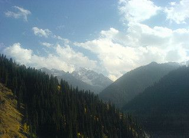

Ты думала как зародилась планета?Ты думала как появились все мы?Упала на землю большая ракета?А может был взрыв неизвестной звезды?
I was lostAnd I'm still lostBut I feel so much better
She sees them walking in a straight line, that's not really her style.And they all got the same heartbeat, but hers is falling behind.
[Repeating chorus:]
Nanana
Nanana, nanana
Nanana...
Quel vestito da dove e' sbucatoche impressionevederlo indossatose ti vede tua madre lo saiquesta sera finiamo nei guai
Я под дождём,А в твоих окнах свет есть.Не подождешь,Ты избегал встреч.Горят в такси чьи-то портреты,Кто-то спросилНаши приметы.
Мягкий шёлк простынейМне напомнит нежность руки твоей.Мне не спится опять,В эту ночь могу я лишь мечтать.

Look at this photographEverytime I do it makes me laughHow did our eyes get so redAnd what the hell is on Joey's head
No me arrepiento de este amorAunque me cueste el corazón;Amar es un milagro y yo te améComo nunca jamás lo imaginé.
На небе много лучезарных звезд, но есть одна прекрасная.Солнышко наше красное, свети на радость нам, свети всегда (2 раза)
It's hard to remember how it felt beforeNow I found the love of my life...Passes things get more comfortableEverything is going right
Солёный ветер бьет в лицоПорой сурово.Он вместо ваших матерейЦелует снова,И вместо ваших жен, подругОн шепчет что-то.
I step off the trainI'm walkin' down your street againAnd past your doorBut you don't live there anymoreIt's years since you've been there
Ом шрим хрим клим глаумГам ГанапатайеВара-варадаСарва-джанам меВашаманайа сваха.(3 раза)
Some love is just a lie of the heartThe cold remains of what began with a passionate startAnd they may not want it to end
つないだ手の愛しさがたぶん恋だということにまだ気づかない夏の始まりさあ 手をつなごうキミの笑顔が消えてしまわぬように
Money, get awayGet a good job with more pay and you're O.K.Money, it's a gasGrab that cash with both hands and make a stash
Εμφανίζεσαι μπροστά μου Κοίτα πώς χτυπάει η καρδιά μου Με ένα βλέμμα σου με τελειώνεις Μη διστάζεις να ανοίξεις Την καρδιά σου να μου δείξεις
My girl is the kinda person everyone likesShe can fix up or just hang with the guysCould be the pretty girl that you see at the mall
Gimme gimme, gimme just a little smile,that's all I ask of you.Gimme gimme, gimme just a little smile,we got a message for you.